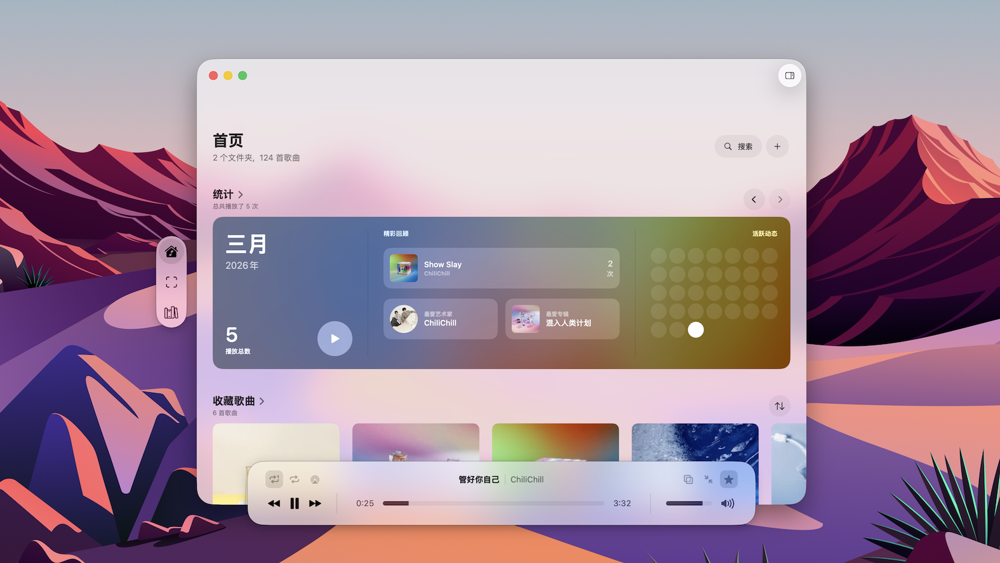
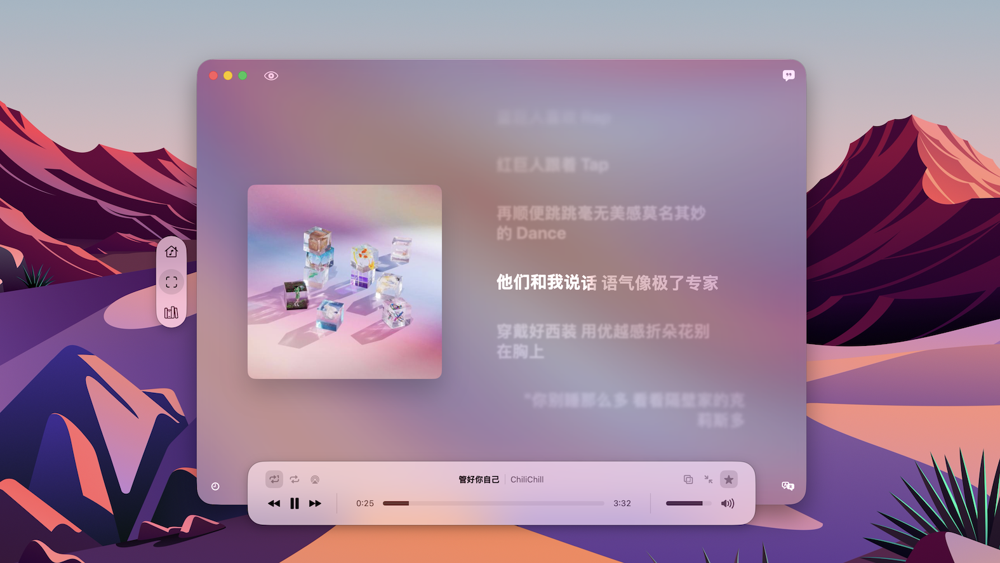
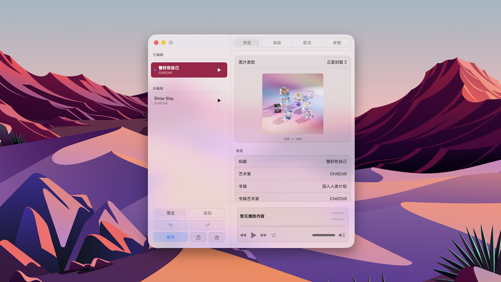
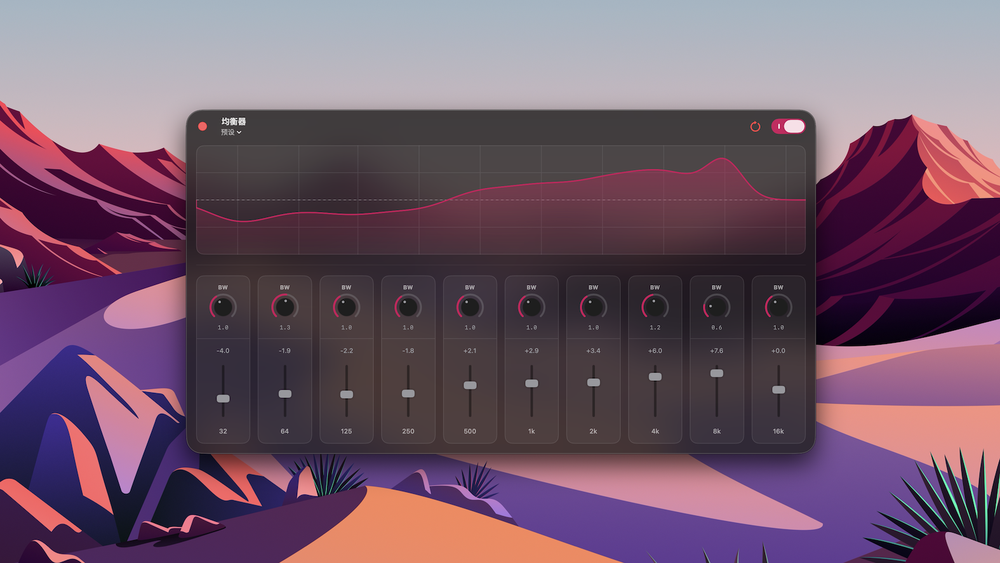
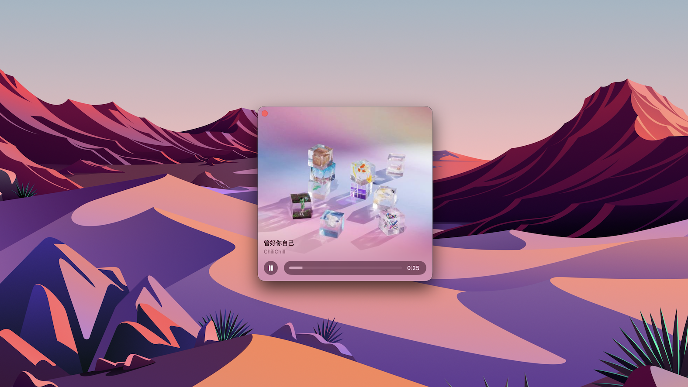

专注本地听歌体验，简单，直觉。 专为 macOS 打造。
沉浸式的半透明设计，与 macOS 深度融合。

支持 LRC 与 TTML 格式，歌词表现力再进一步。

整理收藏，变得轻而易举。

为不同风格的乐曲找到最理想的平衡点。

将封面化作精致的海报卡片。

无需联网，无广告。所有播放习惯与音乐信息仅保存在你的 Mac 上。
针对 Apple 芯片优化，运行轻快且省电，只为最纯粹的聆听。
完美支持媒体键、通知中心以及“正在播放”小组件。